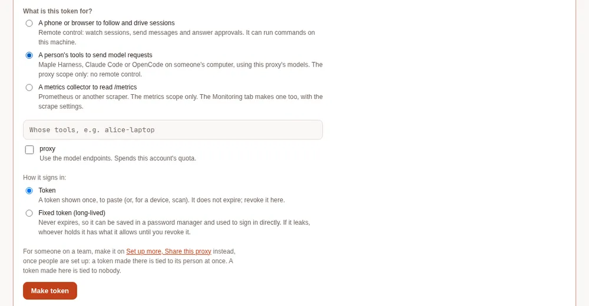
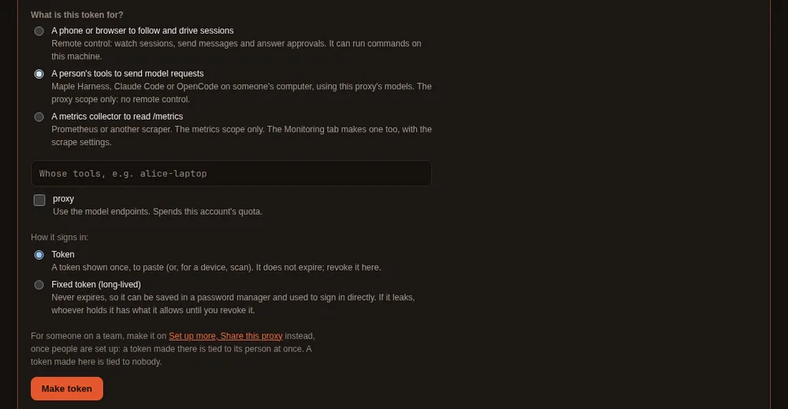
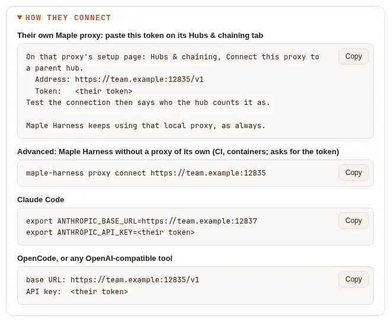
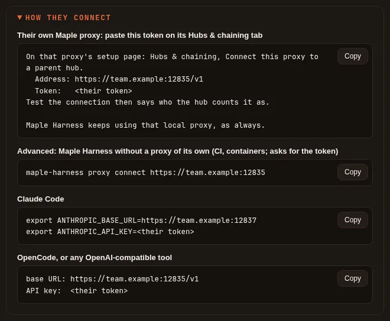
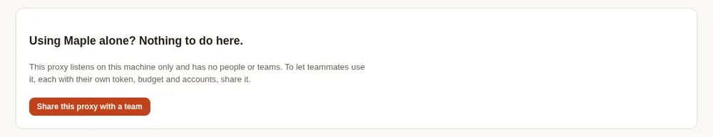
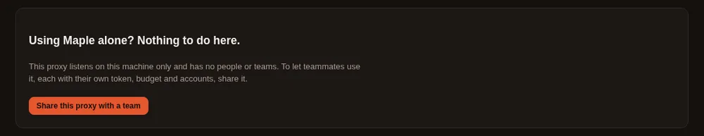
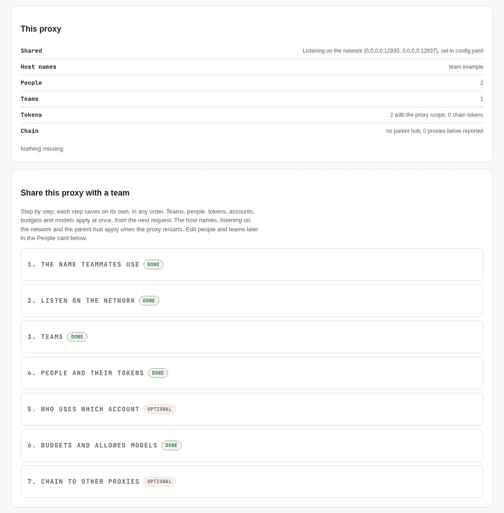
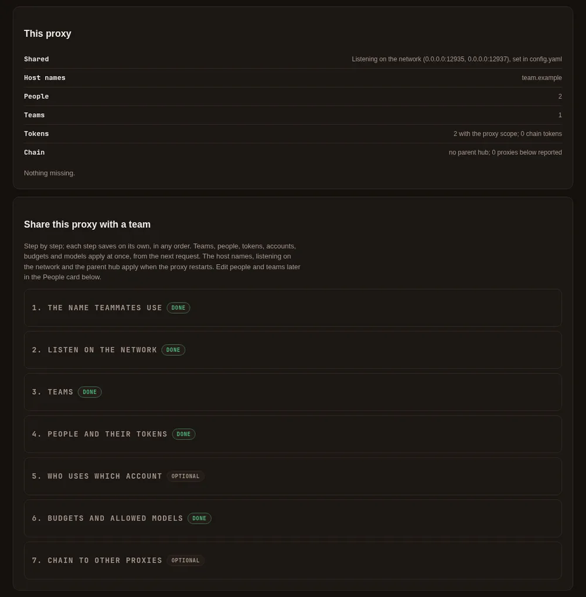

Teams #
On this page
Several people can share one proxy, each with their own access token. The proxy then knows who sent every request, can give each person or team their own provider accounts, model list and budget, and lets each person see their own usage.
If you use Maple on your own machine, you need none of this. Nothing on this page is on until you add it to
config.yaml. A proxy without people:, teams: or default_accounts: routes, refuses and records requests exactly
as before.
In plain words #
- What it is. Several people share one proxy, each with a token of their own, so the proxy knows who sent each request.
- Why you want it. Each person or team can get their own accounts, models and budget, and you see who spent what.
- The clicks. On the setup page, Set up more, Share this proxy with a team: the People & teams tab walks you through it (host name, listening on the network, teams, people and their tokens, budgets). For one person later, open them on the People card and press Make a token. A token made under Security & access for A person's tools works too, but is tied to nobody until you tie it.


How each person signs in #
A person has no password of their own on the proxy. What identifies a person is an access token tied to them. Every request that carries one of their tokens is theirs: their budget, their model list, their accounts, their line on the People card. A person with no token cannot connect from another machine at all. (With developer sign-in on, developers make their own tokens through single sign-on; what follows is the same token, made by an admin.)
A token starts with mh_, carries the proxy scope (the scope that lets it use the model endpoints), and belongs to
one person. The proxy keeps only a hash of it, so it is shown once, when it is made, and never again.
Make a token and tie it to the person #
On the proxy's machine:
- Open the setup page (
http://127.0.0.1:11539), then People & teams, and find the person on the People card. - Open Access and tokens under their name. Give the token a name you will recognise later, such as
carol-laptop, and choose when it expires. - Select Make a token. It has the proxy scope only and is tied to the person at once. It is shown once: copy it, with the lines for their tools beside it, and keep it for the next step.
Or, in a terminal:
maple-proxy token add carol-laptop --person carol # shown once, tied to carol
maple-proxy token list # ids, labels, scopes and people, never the tokenA token made under Security & access → Remote access (A person's tools to send model requests) is tied
to nobody until you tie it on the People card (Edit → Tie a token) or with
maple-proxy people tie-token carol <token-id> (maple-proxy people list lists untied tokens at the end, with their
ids). Only a token with the proxy scope can be tied.
A token that is not tied to anyone still works, but its requests count as unattributed and no person's rules apply (see Who a request belongs to).
Hand the token over safely #
- Send it over a private channel: in person, a password manager's shared item, or a direct message that is not kept in a shared channel. Never in a group chat, an issue, an email list or a commit.
- The person keeps it in their secret store or an environment variable, never in a file that goes into a repository.
- If it may have been seen by someone else, revoke it and make a new one (below).
How each tool uses the token #
Each person's tools send the token as their API key. How they connect, under the person's Access and tokens,
shows these lines with this proxy's addresses. Replace proxy.example with the address of the proxy's machine, and
use the ports it listens on (11535 for OpenAI-compatible tools and 11537 for Anthropic-compatible ones, unless you
changed them).
Maple Harness, with Maple installed on their machine (the usual case): their own proxy joins this one, and the harness keeps talking to their own proxy. On their proxy's setup page, Hubs & chaining, Connect this proxy to a parent hub, under Or paste a token from the hub's admin: this proxy's address (ending in
/v1) and the token. Test the connection there says who this proxy counts them as, and the page leaves Use the hub's people and teams here, and send usage up unticked (that is for a chain token). With single sign-on and developer sign-in on, they sign their proxy in with their company account instead, and need no token from you: the How they connect lines then start with that command. See Join with a personal token and Join your laptop to a team hub.Maple Harness without a proxy of its own (a CI job, a container): the advanced way, the line How they connect shows for it:
maple-harness proxy connect https://proxy.example:11535It asks for the token without showing it and keeps it in the person's secret store.
Claude Code:
export ANTHROPIC_BASE_URL=https://proxy.example:11537 export ANTHROPIC_API_KEY=<the token>OpenCode, or any OpenAI-compatible tool: the base URL
https://proxy.example:11535/v1, and the token as the API key.


Reach the proxy over HTTPS or a private network, such as Tailscale or a VPN: plain HTTP across a network others share lets them read tokens. The details for each tool are in On each teammate's machine.
local and unattributed #
localis a request from the proxy's own machine that carries no token. It needs no token, so the People card shows no note for it. Add a person with the idlocalto give it a team, a budget or rules.unattributedis a request no person was recorded for: one made with a token tied to nobody, or sent before people were set up. Tie the token to a person, or revoke it.
A request with no team recorded (its person has no team, or it has no person) shows as no team in the setup page's
charts by team, in the filter bar and in maple-proxy usage query; JSON and CSV keep -.
Several tokens per person #
A person can have as many tokens as they like, one per device (carol-laptop, carol-desktop). Tie each one to
them; all their requests count as theirs, and revoking one leaves the others working. The People card says what each
person signs in with ("signs in with: carol-laptop, carol-desktop"), and maple-proxy people list shows each token's id
and name. A person with no working token gets a note on the People card saying they cannot connect yet, and how to
give them one.
Rotate or revoke a token #
- Revoke: under the person's Access and tokens, select Revoke next to the token (or Revoke all), or
run
maple-proxy token revoke <token-id>. It stops working at once and is untied from the person. - Rotate: make a new token for the same person, hand it over, let them connect with it
(pasted again on their proxy's Hubs & chaining,
maple-harness proxy connectagain, or the new key in their tool), then revoke the old one. Nothing they spent is lost: spend and budgets belong to the person, not to the token.
When a request is refused #
| Answer | What it means | What to do |
|---|---|---|
401, "a valid access token with the proxy scope is required" | No token, a mistyped, revoked or expired one, or one without the proxy scope | Check the key the tool sends; make a new token with the proxy scope if needed |
403 from the proxy's address | The address the tool uses is not in server.allowed_hosts | Add the name to allowed_hosts, or use a name that is there |
403, model_not_allowed | The person's or their team's model list does not allow that model | Use an allowed model, or change the list (Models) |
429, budget_exceeded | The person's or the team's budget is spent for the day or the month | Wait for the reset (00:00 UTC, or the 1st), or raise the budget (Budgets) |
429, "too many failed attempts" | Several wrong tokens in a row from that address | Fix the token, wait a minute, and try again |
Set up a team on the People & teams tab #
The setup page's People & teams tab does all of this step by step, on the proxy's own machine. On a proxy used by one person it is not in the menu: open Set up more and press Set up on Share this proxy with a team (the tab then stays in the menu on that browser). Used alone, it says there is nothing to do, with one button to start sharing:


Once you start, the tab shows whether the proxy is shared and what is missing, and walks through seven steps. Each step saves on its own, in any order:
- The name teammates use (
server.allowed_hosts), with advice on HTTPS. - Listen on the network. You confirm it first. It needs a token with the proxy scope to exist (step 4), since the proxy refuses to start on the network without one. It keeps the ports and applies when the proxy restarts.
- Teams.
- People and their tokens. Each person gets a token with the proxy scope, tied to them. It is shown once, with a
copy button, and the How they connect lines to send them: their own proxy first, then the advanced
maple-harness proxy connectline, Claude Code and OpenCode. - Who uses which account: the default accounts, and each team's and person's.
- Budgets and allowed models, per team and per person.
- Chain to other proxies: choose a parent hub (added under Providers as a provider of type
maple), or make a chain token for a proxy below.
Teams, people, tokens, accounts, budgets and models apply at once, from the next request. The host names, listening on the network and the parent hub apply when the proxy restarts. Everything set up is edited later in the People card, on the same tab.


The tab is on the setup page on the proxy's machine. Through single sign-on a team admin sees the People card as before; the overview, listening on the network and chain tokens stay on the proxy's machine.
Set up a team in four steps #
Make a token for each person. On the proxy's setup page, open Security & access → Remote access. It asks what the token is for: choose A person's tools to send model requests, tick proxy (the only scope it offers), choose Token, and give each person their token. (The other choice, A phone or browser to follow and drive sessions, is for remote control.) A token is shown once; treat it like a password. Step by step, and the quicker way once a person exists (their Make a token on the People card): How each person signs in. In a terminal on the proxy's machine,
maple-proxy token add alice-laptop --person alicedoes the same and ties the token to the person at once (after step 2'speople add);maple-proxy token listshows ids, never tokens, andmaple-proxy token revoke <id>revokes one.Add the people. Name each person, put them in a team if you like, and tie their token to them by its id (the setup page and
maple-proxy people listshow ids;config.yamlnever holds a token itself):maple-proxy people add alice --team platform maple-proxy people tie-token alice <token-id>Set budgets and rules (all optional):
maple-proxy people budget alice --daily 40 --monthly 600 maple-proxy teams budget platform --monthly 2000 maple-proxy people models bob --allow coder-default,gpt-5Check the People card on the setup page: each person, their tokens by label, their budget used and left, and what they spent in the range you choose.
The same in config.yaml:
people:
- id: alice
team: platform
tokens: [3f9c2a1b7d4e] # token ids, never tokens
budget: {daily_ai_units: 40, monthly_ai_units: 600}
models:
allow: [coder-default, "copilot/*"]
fallbacks: {claude-opus-5: [claude-sonnet-5]}
accounts: [copilot-work]
teams:
- id: platform
budget: {monthly_ai_units: 2000}
accounts: [copilot-team]
default_accounts: [copilot-main]
people_self_view: "off"The People card and the maple-proxy people commands write the same keys and keep your comments. A change made on
the setup page applies to the next request. A change made with the command is sent to the running proxy, which
applies it at once; the command says whether it did, and when no proxy is running, the proxy reads the change when it
next starts.
Who a request belongs to #
- A request with a token belongs to the person that token is tied to. A proxy token tied to nobody still works; its
requests are counted as unattributed and no person's rules apply to them.
maple-proxy people listlists such tokens, so you can tie or revoke them. - On a proxy that listens only on this machine, a token is not required. A request that carries one anyway is checked, and refused if it is not valid, so a person working on the proxy's own machine is counted as themselves.
- A request from this machine without a token belongs to the person
local. Add a person with the idlocalto give that caller a team, a budget or rules; without one,localhas no limits, as before.unattributedis reserved: it names requests tied to nobody. - The usage log records
personandteamon every request from then on. Requests from before people were set up stay unattributed.maple-proxy usage query, the setup page and the DuckDB views all show them asunattributed(see Requests with no person).
Budgets #
A budget is in AI units, as the providers reported them: the same units as the provider budgets (budgets:). Set
a daily limit, a monthly limit or both, per person and per team. Days and months are counted in UTC, so a daily budget
resets at 00:00 UTC and a monthly one on the 1st.
AI units are what GitHub Copilot reports; an Anthropic API key reports none. To cap spend on such an account, give the
person or team a cap in estimated dollars as well (daily_usd, monthly_usd, or
maple-proxy people budget alice --monthly-usd 25): each limit counts on its own, and a request needs room in all of
them. Dollars are Maple's estimate at the providers' list prices, through this proxy only. See
Monthly dollar budgets.
- A request is refused before it is sent once the person's or the team's budget is spent, with a
429and the codebudget_exceeded, in the API's own error shape. Other people are not affected. - A refusal for a team budget names the team but not its figures, which include other people's spend.
- Requests that are already running when a budget runs out are allowed to finish. So a budget can be exceeded by what those last requests cost, and by nothing more. While requests are running, the proxy holds back each one's likely cost (the person's usual cost per request, and at least a small share of the budget), so only a few can start at once against a budget and a burst of parallel requests is refused.
- What a provider reported for a request counts, even when the request then failed or was stopped part way. A request that failed with no cost reported, an answer from the response cache and the proxy's own cache-warming requests do not count.
- Spend is read back from the usage log when the proxy starts, so a restart does not hand back a fresh budget. With the usage log off, budgets count from the moment the proxy started.
- The usage log's
budget_scopecolumn says which budget counted a request:person,teamorprovider.
Models #
models.allow lists the models a person or a team may use: names as asked for (an alias such as coder-default, or
auto), model ids, or account/model, with * as a wildcard (copilot/*; a name ending in /* also covers
everything a hub passes on under it, such as hub/copilot-work/gpt-5). An empty list allows every model.
- A person's list narrows their team's: a model must be allowed by both. A person without a list of their own has the team's. A person's list can never add a model the team's list leaves out; the People card points out an entry that reaches outside the team's.
- A model that is not allowed is refused with a
403and the codemodel_not_allowed(permission_erroron the Anthropic-compatible address). The message says whose list refused it, the person's or the team's. A fallback to a model that is not allowed is skipped. /v1/modelslists only the models the person asking may use, on their own accounts or on the accounts assigned to them. A token tied to nobody, and a caller on this machine without a token when nolocalperson is set up, see every model, as on a proxy without people.models.fallbacksreplacesmodel_fallbacksfor that person or team, per model asked for. With an allow-list, it can send a model the person may not use to one they may: a request forclaude-opus-5answered byclaude-sonnet-5. The usage log'sroute_reasonthen readsperson-policy.
Accounts #
Each account (a provider entry, such as one GitHub Copilot sign-in) has an id and may have a nickname; either works in these lists.
accountson a person, then on their team, thendefault_accountsfor everyone, are tried first, in that order, for a model of their kind. A person on two accounts falls back from the first to the second the same way the proxy's own account fallback works. A request that names its account (copilot-work/gpt-5) is served there.accounts_only: truelimits a person or a team to their own accounts: anything that would be served by another account is refused withmodel_not_allowed. A person limited to their accounts may also use their team's, unless the team is limited to its own; then the person's accounts narrow the team's, and must be among them (the proxy refuses aconfig.yamlthat lists another one, and says which team's list it is not on).- The usage log records the account that served each request (
provider) and why it was used (account_source:person,team,defaultorrequest).
You are responsible for following each provider's terms for the accounts you connect.
The self view #
With people_self_view: "on" (off by default; the switch is on the People card, or maple-proxy people self-view on),
each person can ask the proxy for their own figures with their own token:
curl -H "Authorization: Bearer $MAPLE_TOKEN" http://<proxy>:11535/v1/maple/me/usage?last=7dIt answers with the person, the label of the token that asked, their own budget used and left, and their requests,
tokens, AI units and estimated cost for the range, in total, by day and by model. since, until and last are the
only parameters; whose figures they are is the token's to say, so there is no way to ask for anyone else's. It shows
no team totals. It needs a valid proxy token even on this machine, is limited to 30 requests a minute per token,
and answers 404 while it is off.
Share one proxy with your team #
On the proxy's machine #
- Set up the people as above.
- Let the proxy listen where your teammates can reach it, for example
server.openai_compat: 0.0.0.0:11535andserver.anthropic_compat: 0.0.0.0:11537. Off this machine every request needs a token with the proxy scope; the proxy will not start that way until one exists. The setup page stays on this machine only. - Reach it over HTTPS or a private network, such as Tailscale or a VPN. Plain HTTP across a network others share lets them read tokens.
Signing in to providers, the setup page and maple-proxy commands all stay on this machine.
On each teammate's machine #
Each person uses their own token, with the proxy scope. Do not share tokens: every request made with one is counted
as its person's.
Maple Harness. With Maple installed on your machine, join your own proxy to this one and keep using Maple Harness
as before: paste the token on your proxy's setup page (Hubs & chaining, Connect this proxy to a parent hub;
Test the connection says "Connected as <you> at <hub>: your requests count as you", and Save), or sign your
proxy in with your company account when the hub offers it
(Join with a personal token,
Join your laptop to a team hub). The hub's models are then hub/<model>
in every tool that uses your proxy.
Where no proxy of your own can run (a CI job, a container), use this proxy directly, the advanced way: run
maple-harness proxy connect https://proxy.example:11535 and paste the token when asked (it
is not shown). The token goes into your secret store, and config.yaml gets only a reference
(harness.proxy.token: ${secret:maple-proxy-token}). From then on every request carries it. The harness never starts or
stops that proxy, and maple-harness auth tells you it runs on the proxy's machine. Check with maple-harness doctor:
the proxy line should say the token was accepted. To keep the token in an environment variable instead, use
--token-env MAPLE_PROXY_TOKEN. maple-harness proxy disconnect goes back to a proxy on your own machine.
Plain http:// to another machine is refused unless you pass --allow-insecure, because it sends your token where
the network can read it.
Claude Code. Point it at the proxy's Anthropic-compatible address and give it your token as the key:
export ANTHROPIC_BASE_URL=https://proxy.example:11537
export ANTHROPIC_API_KEY=<your token>OpenCode, or any OpenAI-compatible tool. Use the proxy's OpenAI-compatible address with /v1, such as
https://proxy.example:11535/v1, and your token as the API key (in OpenCode, an openai-compatible provider entry
with baseURL and apiKey). Keep the token in an environment variable rather than in a file you commit.
Teams across chained hubs #
When a proxy uses another Maple proxy as its parent, it inherits the parent's people, teams, their accounts, budgets and model rules, and the parent's tokens (as hashes, never the tokens), and passes them on to its own children.
- What the proxy uses is the inherited people and teams plus its own. Inherited entries are read-only there: the People card marks them, and the commands refuse to change them.
- A child may add its own people and teams. It may also tighten an inherited one by adding an entry with the same id:
a lower budget, a narrower model or account list, or
accounts_only: true. Anything that would loosen it (a higher budget, a model outside the inherited list, another team, its own tokens) is refused, and the inherited entry applies. - If a local entry clashes with an inherited one in any other way, the inherited entry wins and the People card lists the clash. The local entry's own tokens (and those of local people in a clashing team) are refused until you resolve it, so they never lose their rules by being counted as nobody's.
- You can add people while the parent cannot be reached; a clash is reported once its people arrive.
- An inherited token works at the child with the scopes it had, except the ones for chaining, administration and the setup page.
- Budgets are counted at every hub a request passes through, each with its own rules. A hub takes a forwarded request as one of its own people only when that person signed in below with their own token; see Chain proxies into hubs.
- The People card and
maple-proxy people listshow chain tokens apart from people's tokens, with the proxy each is bound to and the person it is tied to. Tie a chain token to a person to hold everything that proxy sends to that person's rules and budget. - If the child cannot get a current copy of its parent's people, it refuses the inherited people and tokens until it can, and keeps serving its own.
Limits #
- Budgets and spend are in AI units as the providers reported them;
cost_estimatedis an estimate from list prices. Neither is a bill. - Only requests with a token can be told apart. On a proxy that listens only on this machine, anyone on the machine
can leave the token out and be counted as
local; listen off this machine to require tokens. /v1/modelslistsautofor a person when every model list that applies to them namesauto, or when they have no model list; whatautopicks is then held to their rules when it is asked for.- Requests already running are not stopped when a budget runs out (see Budgets).
Going back to an older version #
A proxy older than 2.0 ignores people:, teams:, default_accounts: and people_self_view: and keeps working:
every token still works, but no person's budget, model list or accounts apply, and requests are no longer attributed.
The keys stay in config.yaml and apply again after an upgrade. The usage log stays readable.